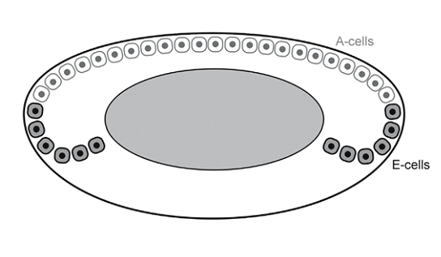

+ Viết tắt: Posterior Capsule Opacification
+ Đục bao sau

Hình: Minh họa E-cells và A-cells
+ Tình trạng này xảy ra sau phẫu thuật đục thể thủy tinh mà nguyên nhân chính là do những tế bào biểu mô thể thủy tinh ở xích đạo (Equatorial Lens epithelial cells = LECs) hay là E-Cells mà cụ thể là chúng ở tại vùng xích đạo túi bao. E-cells có thể phát triển và di chuyển đến vùng trung tâm của bao sau. Chúng có xu hướng tạo thành một cấu trúc hình cầu được gọi là "Pearls".

Hình: Hai dạng đục bao sau